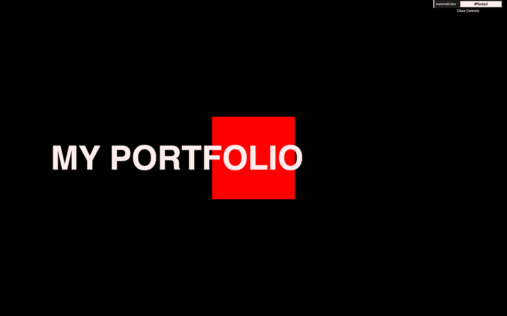
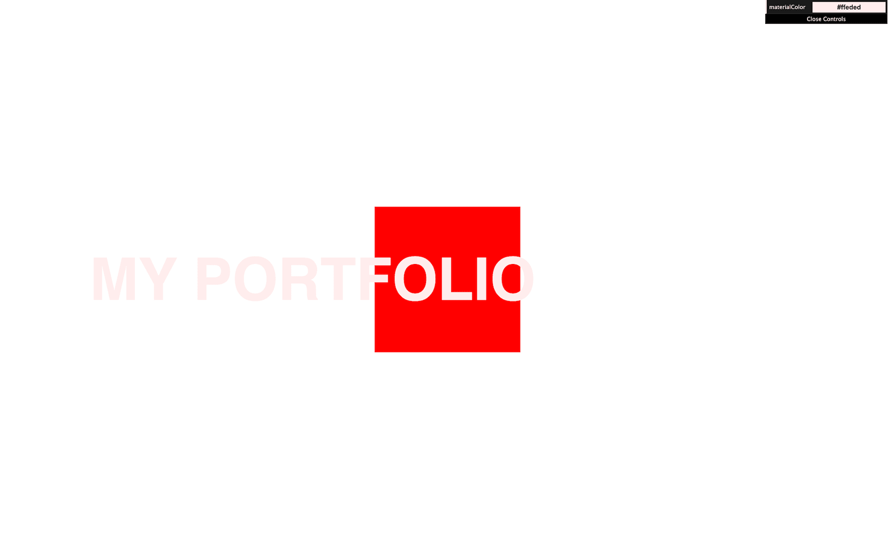
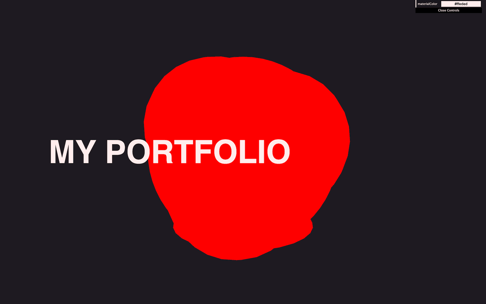
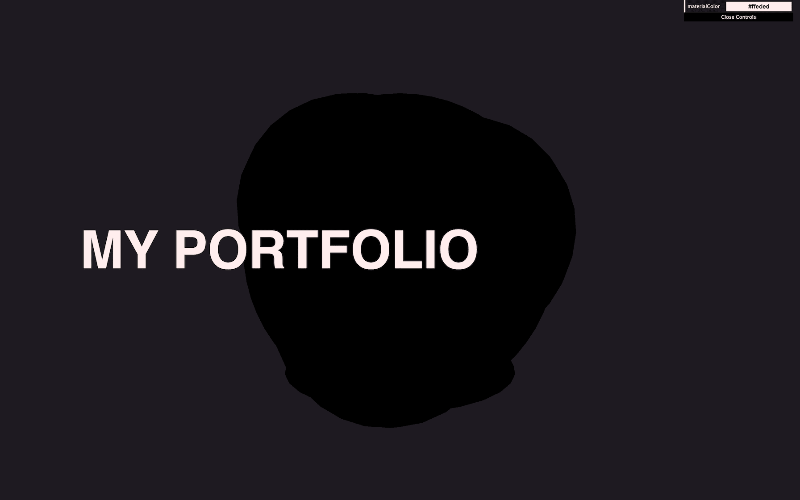
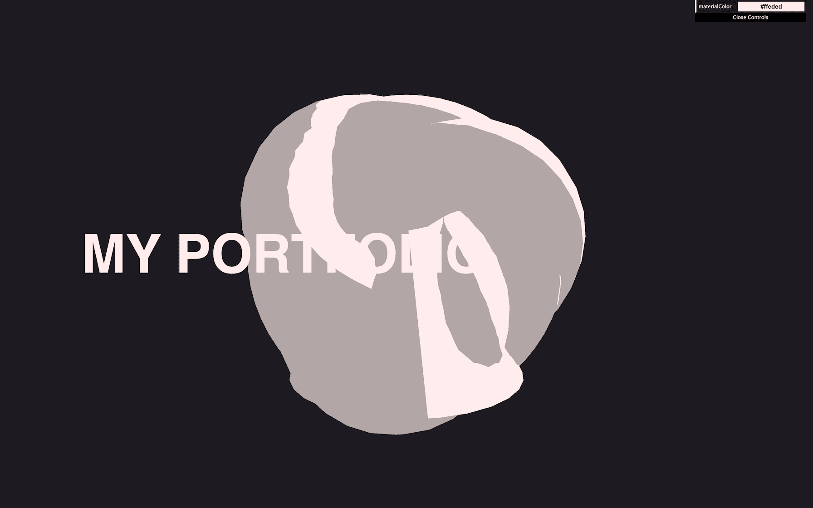
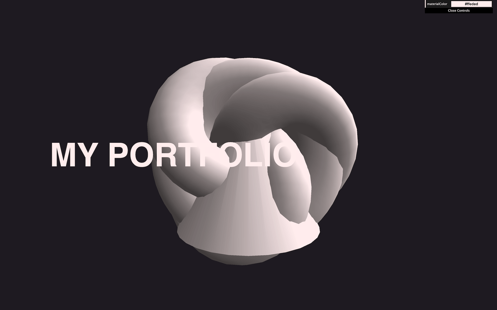
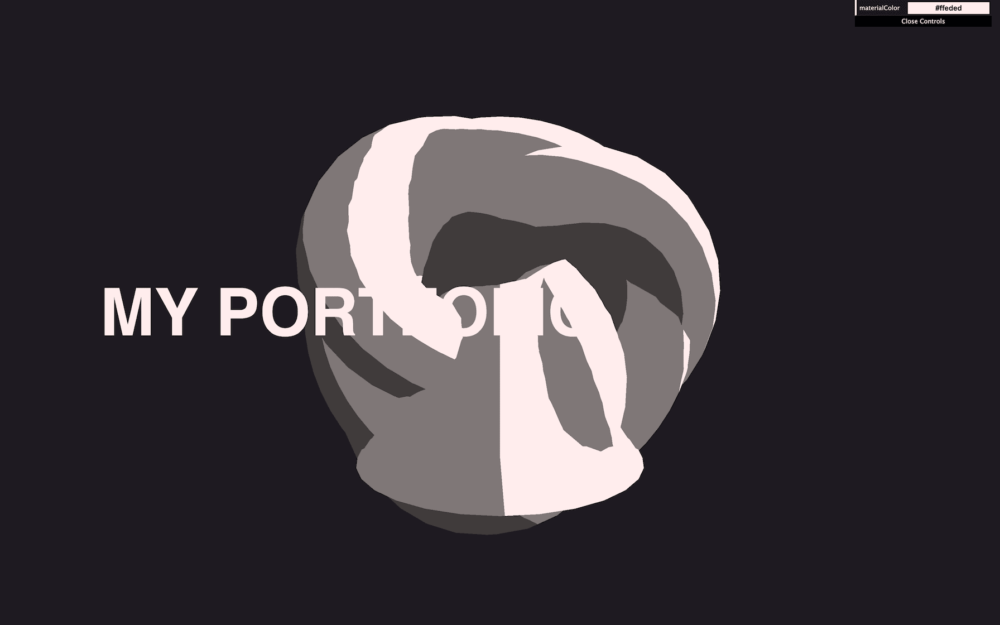
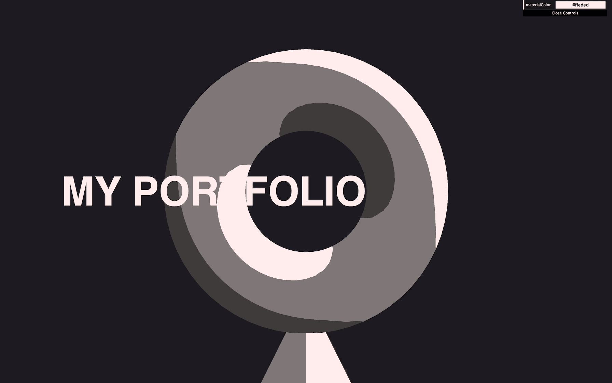
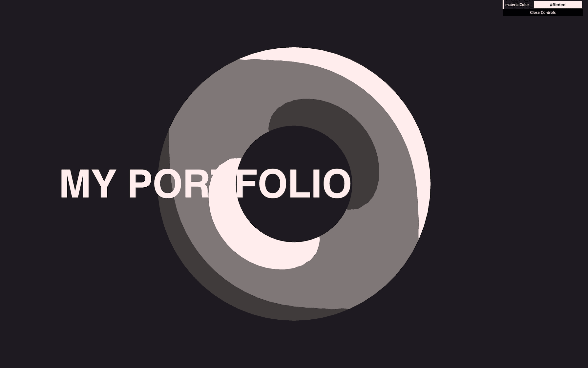
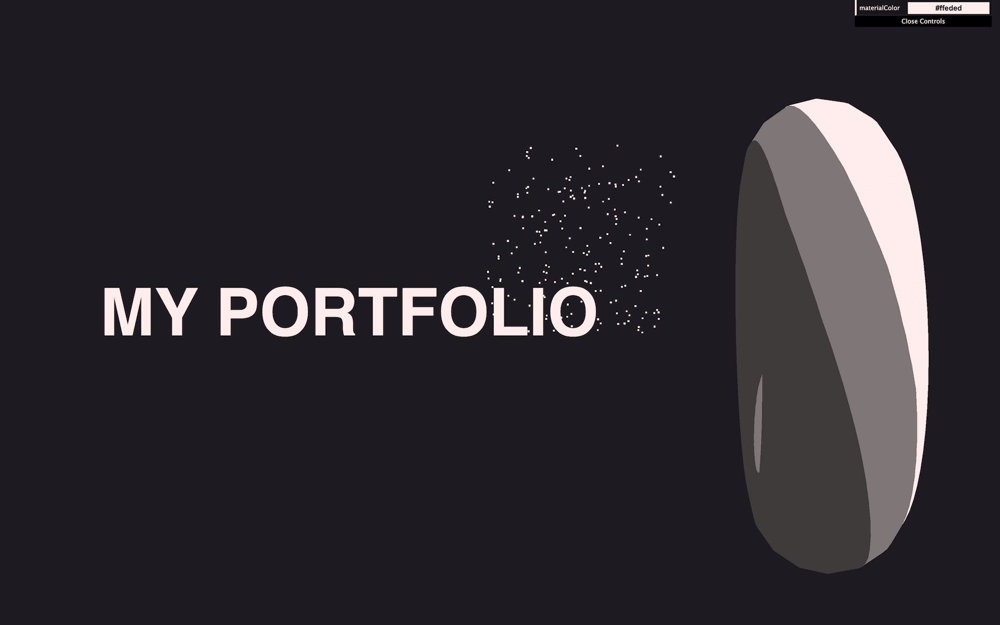

Having an experience composed of only WebGL is great, but sometimes, you'll want the experience to be part of a classic website.
The experience can be in the background to add some beauty to the page, but then, you'll want that experience to integrate properly with the HTML content.
In this lesson, we will learn how to use Three.js as a background of a classic HTML page. We will make the camera translate to follow the scroll. We will discover some tricks to make this scroll more immersive. We will add a cool parallax animation based on the cursor position. And finally, we will trigger some animations when arriving at the corresponding sections.
This lesson is a good opportunity to practice many of the techniques we've already learned. Instead of having the environment already set up, we will do most of the work ourselves.
The OrbitControls has been removed because we want the camera to move according to the scroll and to not let the user rotate about as in prior lessons.
Dat.GUI is already available and one color as been created to be used later:
Some very simple HTML content has been setup already. Currently, you can only see one title but there are two sections right below. We can't see them because the scroll is blocked.

Earlier in the course, we deactivated the scroll using this CSS:
To reactivate it, remove the overflow line in /src/style.css.
You should be able to scroll and see the two other sections below.
In some environments, you might notice that, if you scroll too far, you get a kind of elastic animation when the page goes beyond the limit.
While this is a cool feature, by default, the back of the page is white and doesn't match our experience.
To fix that, we could have set the background-color of the page to the same color as the clearColor of the renderer . Instead, we are going to make the clearColor transparent and only set the background-color on the page.
To do that, in /src/script.js, you need to set the alpha property to true on the WebGLRenderer:
By default, the clear alpha value is 0 which is why we didn't have to set it ourselves. Telling the renderer to handle alpha is enough. But if you want to change that value, you can do it with setClearAlpha:

We can now see the back of the page which is white.
In /src/style.css, add a background-color to the html in CSS:
We get a nice uniform background color and the elastic scroll isn't an issue anymore.
We are going to create an object for each section to illustrate each of them.
To keep things simple, we will use Three.js primitives, but you can create whatever you want. And later in the course, you'll learn how to import custom models into the scene.
In /src/script.js, remove the code for the cube. In its place, create three Meshes using a TorusGeometry, a ConeGeometry and a TorusKnotGeometry:

All the objects are, of course, on top of each other. We will fix that later.
Again, in order to keep things simple, our code will be a bit redundant. But don't hesitate to use arrays or other code structuring solutions if you have more sections.
We are going to use the MeshToonMaterial on all three Meshes.
As in the Materials lesson, we are going to create one instance of the material and use it for all three Meshes.
When creating the MeshToonMaterial, use the parameters.materialColor for the color property and apply it to all 3 Meshes:

Unfortunately, it seems that the objects are now black.
The reason is that the MeshToonMaterial is one of the Three.js materials that appears only when there is light.
Add one DirectionalLight to the scene:

You should now see your objects.
We are using the color stored in the parameters object, but changing this value with the Tweaker doesn't change the material itself.
To fix that, we can listen to the change event on the already existing tweak and update the material accordingly:
As we saw in the Materials lesson, by default, the MeshToonMaterial will have one color for the part in the light and one darker color for the part in the shade.
We can improve that by providing a gradient texture.
Two gradient images are provided in the /static/textures/gradients/ folder.
Instantiate the TextureLoader before instantiating the material. Then load the textures/gradients/3.jpg texture:
Use it in the gradientMap property of the material:

Not the toon effect we were expecting.
The reason is that the texture is a very small image composed of 3 pixels going from dark to bright. By default, instead of picking the nearest pixel on the texture, WebGL will try to interpolate the pixels. That's usually a good idea for the look of our experiences, but in this case, it creates a gradient instead of a toon effect.
To fix that, we need to set the magFilter of the texture to THREE.NearestFilter so that the closest pixel is used without interpolating it with neighbor pixels:

Much better, but we still need to position the meshes properly.
By default, in Three.js, the field of view is vertical. This means that if you put one object on the top part of the render and one object on the bottom part of the render and then you resize the window, you'll notice that the objects stay put at the top and at the bottom.
To illustrate this, temporarily add this code:
The torus stays at the top and the torus knot stays at the bottom. When you're done, remove the code above.
This is good because it means that we only need to make sure that each object is far enough away from the other on the y axis, so that we don't see them together.
Create an objectsDistance variable and choose a random value like 2:
Use that variable to position the meshes on the y axis. The values must be negative so that the objects go down:

Increase the objectsDistance until the objects are far enough apart. A good amount should be 4, but you can go back to change that value later.

Now, we can only see the first object. The two others will be below. We will position them horizontally once we move the camera with the scroll and they appear again.
The objectsDistance will get handy a bit later, which is why we saved the value in a variable.
To give more life to the experience, we are going to add a permanent rotation to the objects.
First, add the objects to a sectionMeshes array:
Then, in the tick function, loop through the sectionMeshes array and apply a slow rotation by using the elapsedTime already available:
All the meshes (though we can see only one here) should slowly rotate.
It's time to make the camera move with the scroll.
First, we need to retrieve the scroll value. This can be done with the window.scrollY property.
Create a scrollY variable and assign it window.scrollY:
But then, we need to update that value when the user scrolls. To do that, listen to the 'scroll' event on window:
You should see the scroll value in the logs. Remove the console.log.
In the tick function, use scrollY to make the camera move (before doing the render):
Not quite right yet. The camera is way too sensitive and going in the wrong direction. We need to work a little on that value.
scrollY is positive when scrolling down, but the camera should go down on the y axis. Let's invert the value:
Better, but still too sensitive. Here's why.
scrollY contains the amount of pixels that have been scrolled. If we scroll 1000 pixels (which is not that much), the camera will go down of 1000 units in the scene (which is a lot).
Each section has exactly the same size as the viewport. This means that when we scroll the distance of one viewport height, the camera should reach the next object.
To do that, we need to divide scrollY by the height of the viewport which is sizes.height:
The camera is now going down of 1 unit for each section scrolled. But the objects are currently separated by 4 units which is the objectsDistance variable:
We need to multiply the value by objectsDistance:
To put it in a nutshell, if the user scrolls down one section, then the camera will move down to the next object.
Now is a good time to position the objects left and right to match the titles:
We call parallax the action of seeing one object through different observation points. This is done naturally by our eyes and it's how we feel the depth of things.
To make our experience more immersive, we are going to apply this parallax effect by making the camera move horizontally and vertically according to the mouse movements. It'll create a natural interaction, and help the user feel the depth.
First, we need to retrieve the cursor position.
To do that, create a cursor object with x and y properties:
Then, listen to the mousemove event on window and update those values:
You should get the pixel positions of the cursor in the console.
While we could use those values directly, it's always better to adapt them to the context.
First, the amplitude depends on the size of the viewport and users with different screen resolutions will have different results. We can normalize the value (from 0 to 1) by dividing them by the size of the viewport:
While this is better already, we can do even more.
We know that the camera will be able to go as much on the left as on the right. This is why, instead of a value going from 0 to 1 it's better to have a value going from -0.5 to 0.5.
To do that, subtract 0.5:
That's a clean value adapted to the context.
Remove the console.log.
We can now use the cursor values in the tick function. Create a parallaxX and a parallaxY variable and put the cursor.x and cursor.y in them:
Unfortunately, we have two issues. The x and y axes don't seem synchronized in terms of direction. And, the camera scroll doesn't work anymore.
Let's fix the first issue. When we move the cursor to the left, the camera seems to go to the left. Same thing for the right. But when we move the cursor up, the camera seems to move down and the opposite when moving the cursor down.
To fix that weird feeling, invert the cursor.y:
For the second issue, the problem is that we update the camera.position.y twice and the second one will replace the first one.
To fix that, we are going to put the camera in a Group and apply the parallax on the group and not the camera itself.
Right before instantiating the camera, create the Group, add it to the scene and add the camera to the Group:
This shouldn't change the result, but now, the camera is inside a group.
In the tick function, instead of applying the parallax on the camera, apply it on the cameraGroup:
The scroll animation and parallax animation are now mixed together nicely. But we can do even better.
The parallax animation is a good start, but it feels a bit too mechanic. Having such a linear animation is impossible in real life for a number of reasons: the camera has weight, there is friction with the air and surfaces, muscles can't make such a linear movement, etc. This is why the movement feels a bit wrong. We are going to add some "easing" (also called "smoothing" or "lerping") and we are going to use a well-known formula.
The idea behind the formula is that, on each frame, instead of moving the camera straight to the target, we are going to move it (let's say) a 10th closer to the destination. Then, on the next frame, another 10th closer. Then, on the next frame, another 10th closer.
On each frame, the camera will get a little closer to the destination. But, the closer it gets, the slower it moves because it's always a 10th of the actual position toward the target position.
First, we need to change the = to += because we are adding to the actual position:
Then, we need to calculate the distance from the actual position to the destination:
Finally, we only want a 10th of that distance:
The animation feels a lot smoother, but there is still a problem that some of you might have noticed.
If you test the experience on a high frequency screen, the tick function will be called more often and the camera will move faster toward the target. While this is not a big issue, it's not accurate and it's preferable to have the same result across devices as much as possible.
To fix that, we need to use the time spent between each frame.
Right after instantiating the Clock, create a previousTime variable:
At the beginning of the tick function, right after setting the elapsedTime, calculate the deltaTime by subtracting the previousTime from the elapsedTime:
And then, update the previousTime to be used on the next frame:
You now have the time spent between the current frame and the previous frame in seconds. For high frequency screens, the value will be smaller because less time was needed.
We can now use that deltaTime on the parallax, but, because the deltaTime is in seconds, the value will be very small (around 0.016 for most common screens running at 60fps). Consequently, the effect will be very slow.
To fix that, we can change 0.1 to something like 5:
We now have a nice easing that will feel the same across different screen frequencies.
Finally, now that we have the animation set properly, we can lower the amplitude of the effect:
A good way to make the experience more immersive and to help the user feel the depth is to add particles.
We are going to create very simple square particles and spread them around the scene.
Because we need to position the particles ourselves, we are going to create a custom BufferGeometry like we did in the Particles and Galaxy Generator lessons.
Create a particlesCount variable and a positions variable using a Float32Array:
Create a loop and add random coordinates to the positions array:
We will change the positions later, but for now, let's keep things simple and make sure that our geometry is working.
Instantiate the BufferGeometry and set the position attribute:
Create the material using PointsMaterial:
Create the particles using Points:

You should get a bunch of particles spread around in a cube.
We went through this part fast because we already learned how to make particles in an earlier lesson. If you struggled, it is normal. It is still a bit hard, and easy to make mistakes.
We can now position the particles on the three axes.
For the x (horizontal) and z (depth), we can use random values that can be as much positive as they are negative:
For the y (vertical) it's a bit more tricky. We need to make the particles start high enough and then spread far enough below so that we reach the end with the scroll.
To do that, we can use the objectsDistance variable and multiply by the number of objects which is the length of the sectionMeshes array:
Like for the objects material, we can update the color of the particles in the change event of the tweak:
That's all for the particles, but you can obviously improve them as we did in the previous lessons with random sizes, random alpha. And, we can even animate them.
As a final feature and to make the exercise just a bit harder, we are going to make the objects do a little spin when we arrive at the corresponding section in addition to the permanent rotation.
First, we need a way to know when we reach a section. There are plenty of ways of doing that and we could even use a library, but in our case, we can use the scrollY value and do some math to find the current section.
After creating the scrollY variable, create a currentSection variable and set it to 0:
In the 'scroll' event callback function, calculate the current section by dividing the scrollY by sizes.height:
This works because each section is exactly one height of the viewport.
To get the exact section instead of that float value, we can use Math.round():
We can now test if newSection is different from currentSection. If so, that means we changed the section and we can update the currentSection in order to do our animation:
We can now animate the meshes and, to do that, we are going to use GSAP.
Add GSAP to the dependencies by running npm install gsap@3.5.1 in the terminal. We are using a very specific version of GSAP to make sure that the code is the same. If you feel like using the latest version, run npm install gsap but you might have to use a different syntax.
If you get vulnerability warnings, don't pay it any mind. It's not dangerous.
Once the dependency is added, import GSAP at the start of the code:
Then, in the if statement we did earlier, we can do the animation with gsap.to():
While this code is valid, it will unfortunately not work. The reason is that, on each frame, we are already updating the rotation.x and rotation.y of each mesh with the elapsedTime.
To fix that, in the tick function, instead of setting a very specific rotation based on the elapsedTime, we are going to add the deltaTime to the current rotation:
To add more randomness to the animation, especially for the cone, we can also animate the z axis:
We kept things really simple, but you can go much further.